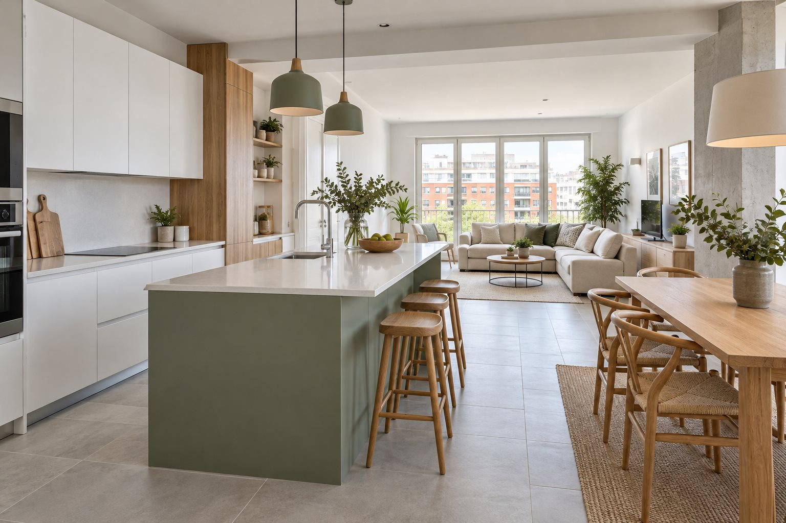

Todo empieza
por una buena
base.
Desliza y descubre cómo transformamos un exterior. Del terreno preparado al hormigón terminado, hasta entrar en casa.
¿Lo hacemos en tu casa? →
Escena ilustrativa · Interior generado con IA · No es una obra realizada